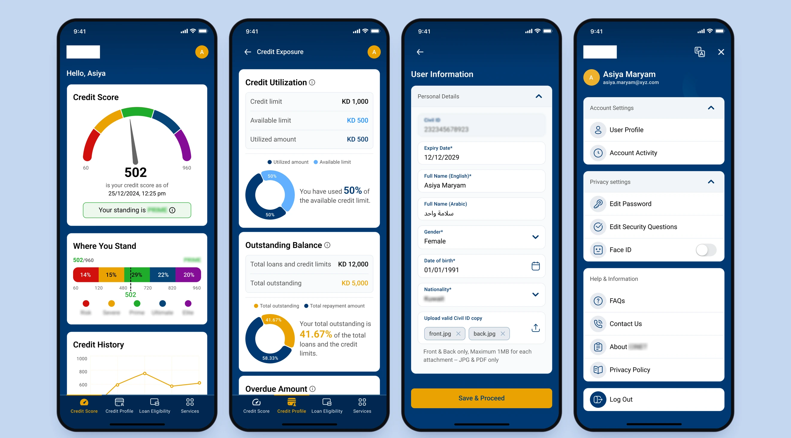
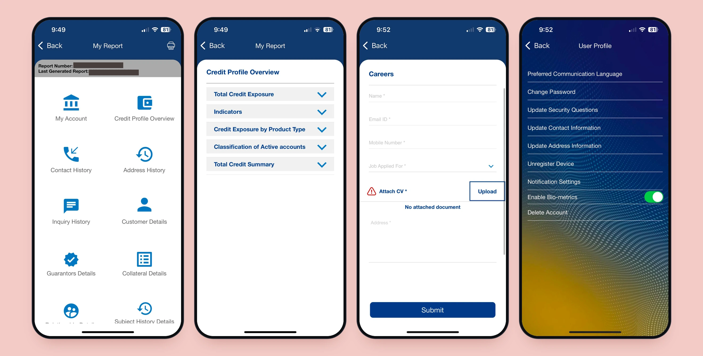
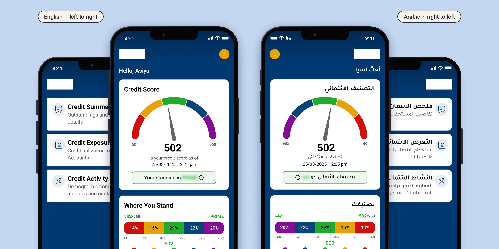
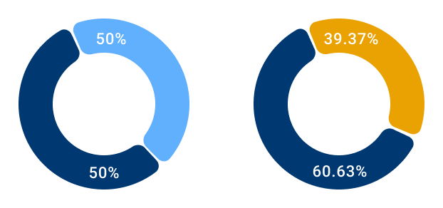
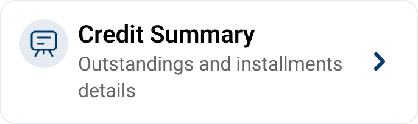
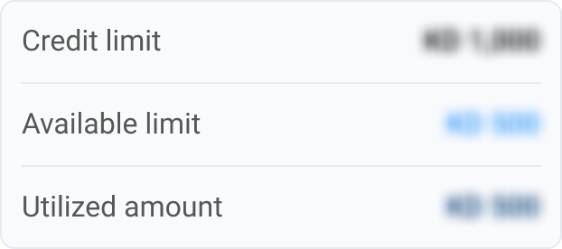

Case study · No. 1
Redesigning a national credit-reporting app
End-to-end redesign of a consumer credit app: new information architecture, security-first flows, and a token-based design system built from scratch.
- Role
- Sole Senior UI/UX Designer
- Client
- A regulated fintech in credit reporting and financial wellness
- Team
- 1 PM, 4 developers, 1 QA, 1 designer (me)
- Timeline
- Phase I: 3 months, then Phase II
- Platforms
- iOS and Android; foldables in Phase II
- Languages
- English and Arabic (RTL)
- Tools
- Figma, Jira

01
The problem
The app worked, but it didn't help people understand their credit.
No structure
12 equal menu items; core tasks mixed with About Us and Careers.
Data without meaning
The report was a 10-icon grid leading to raw, repeated records.
Hidden upgrade
Paid reports and packages buried under one vague menu item.
Dated, inconsistent UI
No shared colours, type or components.
Hard to extend
No foundation for new features such as loan eligibility and alerts.

02
Research
User interviews. The client ran interviews with existing users, using a question set we wrote together. Users confirmed the issues:
- They couldn't tell what their score meant or what drove it
- They couldn't find key information spread across tabs
- They didn't know the upgrade existed, what it unlocked, or how long a report stayed valid
- They found the interface dated and hard to trust
Audit and requirements. I audited all 22 screens of the live app and mapped them against the 18 features in the client's requirements. This showed what to keep, what to regroup and what was new.
22screens audited
18features mapped
Principles that came out of it
- Summary first, depth on demand
- Group by user intent, not by data source
- Make paid value visible where it's relevant
- Systemise everything with tokens and components
03
Information architecture
I replaced the 12-item menu with a bottom tab bar for core tasks and a top menu for account utilities. My first proposal had 3 tabs; after the client review it became 4.
| Initial proposal | Final | |
|---|---|---|
| Tab 1 | Dashboard: score, buy report, credit summary | Credit Score: score, standing, history, report |
| Tab 2 | My Reports: everything detailed, incl. loan eligibility | Credit Profile: summary, exposure, accounts, inquiries |
| Tab 3 | Services: report, disputes, contact, FAQs, careers | Loan Eligibility: card, housing, consumer finance, calculator |
| Tab 4 | n/a | Services: buy report, disputes |
| Top menu | Profile, privacy, settings, log out | + language, Contact Us, FAQs |
- Why 4 tabs: the score is the main reason people open the app, and loan eligibility is the most actionable outcome. Each earned its own tab.
- Client scope cuts: self-assessment, personalised offers, credit education and careers removed.
- Deferred to Phase II: subscription packages, alerts and notifications.
12 items, all on one level
3 tabs
4 tabs
score, buy report, credit summary
everything detailed, incl. loan eligibility
report, disputes, contact, FAQs, careers
Profile, privacy, settings, log out
score, standing, history, report
summary, exposure, accounts, inquiries
card, housing, consumer finance, calculator
buy report, disputes
Profile, privacy, settings, log out, plus language, Contact Us and FAQs
04
Key design decisions
Progressive disclosure: summary → detail → deeper insight
- Home shows the verdict: score gauge, band (Risk to Elite), history trend, report actions
- Credit Profile groups the detail: exposure, utilisation, overdue amounts
- Raw records stay one level deeper, for checking or disputes
- The standing label's colour follows the score band, so meaning comes before numbers

A visible upgrade
- Home report card: paid “Purchase report & unlock data” (price shown) next to “Download free report”
- Services lists each report product and what it includes
- Phase I kept it to a single free vs paid choice; packages came in Phase II
One report card, nine states
Users didn't know how long a report stays valid or what they were entitled to next. I mapped every scenario into a logic chart (scenario → rules → card state) that design, development and QA shared.
- Rules made visible: one free report every 12 months; every report available for 2 months
- 9 scenarios covered, including first login, free vs purchased, both reports active, and returning before or after 2 or 12 months
- Card adapts to each state: CTAs switch between Download freeOpen freeOpen purchasedPurchase new
- Dates always shown: “Generated on / Available until”, or “Your next free report will be available on …”
- Confirmation before generating: explains the 2-month validity, and warns if an active report already exists
The free report across one year
-
Day 0
First login
Credit Report
Access your report data
Purchase Report & Unlock Data Download Free Report -
Within 2 months
Free report generated
Credit Report
Access your report data
Purchase Report & Unlock Data Open Free ReportGenerated on 27/10/2024
Available until 28/12/2024 -
After 2 months
Free report expired
Credit Report
Access your report data
Purchase Report & Unlock DataYour next free report will be available on 27/10/2025
-
After 12 months
Free report unlocked again
Credit Report
Access your report data
Purchase Report & Unlock Data Download Free Report
4 of the 9 scenarios in the logic chart. The rest cover purchased reports, both reports active at once, and mixed timelines. Dates are dummy and prices are removed.
Two languages, fully mirrored
- Every screen in English and Arabic
- Right-to-left mirroring covers navigation order, gauge direction, chart axes and the band scale

Accessible by default
- All text meets WCAG 2.1 AA contrast
- The gold secondary CTA first used white text, which failed testing (2.2:1; AA needs 4.5:1)
- Switched to brand navy text on gold (5.3:1), which passes AA and keeps the brand pairing
FailsBefore · white on gold · 2.2:1
PassesAfter · navy on gold · 5.3:1
05
Security-critical flows
Authentication isn't limited to login. It's triggered by the action and the account's state.
When extra verification kicks in
- New device login
- Changing a registered email or phone number
- Forgotten or reset password
- Setting or updating security questions
- Repeated wrong passwords
- Sensitive account functions
- Repeated failure of the primary method
Methods: the national digital-ID app, security questions, one-time passcodes, and checks against details on file.
Flows designed end to end
Every journey in the app, from onboarding and payments to edge cases and emails.
Onboarding & access
- Login
- Automatic registration
- Manual registration
- eKYC via digital-ID app
- Video KYC
- Forgot password
- Reset password
- OTP verification
- Security questions
Credit features
- Credit score
- Credit profile
- Loan eligibility
- Free report
- In-app purchase
- Packages
- Subscriptions
- Report generation logic
- Dispute resolution
Account
- Hamburger menu
- Notifications
- Inbox
- Profile
- Account activity
- Biometric login
- Security Q&A
- FAQs
- Contact us
- Privacy and terms
Edge cases
- No network
- Force update
- Maintenance and partial outage
- Login on another device
- Inactivity logout
- Declined digital ID
- Toasts and tooltips
- Language selection
Emails
- Informational
- Authentication
- Transactional
Designed for fallbacks, not just the happy path.
Modular flow architecture
- I built each recurring check as its own reusable flow: Security Questions (Flow 1.0), Digital ID (Flow 2.0), Email/Phone Validation (Flow 3.0)
- Main journeys (Login, Registration, Forgot Password, Reset Password) reference them with a small flow-reference box instead of repeating screens
- Change a module once, and every journey that references it stays current
- It's the same principle as components and tokens, applied to flows
Authentication is designed once and referenced from every journey
Main journeys
Reusable authentication modules
Example: login flow, V1.0 → V1.2
V1.0
Linear: every auth step drawn inline.
First pass at requirements
V1.1
Inline steps → module references; added branches for new devices, biometrics, identity-service downtime, and digital-ID vs manual users.
Real-world conditions
V1.2
Removed email auth and the 15-min lockout; security questions made conditional; added a “previously locked?” check.
Client security review
- Versioning rule: x.1 / x.2 = minor change, 2.0 = major change
- Changed screens outlined per version (red in V1.1, green in V1.2), so developers saw the change instantly
06
Design system
Built from scratch in Figma, with every component bound to tokens.
Foundations
Colour
Navy and amber ramps (7 steps each), neutrals, status colours, a 5-colour credit-score palette
Type
Roboto (English) and Tajawal (Arabic) on one shared scale
Grid
8 px base, 4 columns, 16 px margins, 8 px gutters
Icons
Outline icons on a 24 px grid
Tokens: primitive → semantic
| Tier | Examples |
|---|---|
| Primitive | primary/B300 secondary/O300 credit-score/Prime |
| Semantic | surface-brand text-primary border-default button-primary-surface |
| Component / domain | nav-icon-active range/risk to range/elite special/paid |
| Spacing, radius | gap-xxs 2 → gap-xxxl 32; radius-none 0 → radius-full 100 |
- Score-band tokens keep the gauge, bar, legend and labels in sync
- Language-aware type styles: components switch font without layout changes
- Light and dark variants built in from the start
~240
components and variants, including buttons, navigation, cards, charts, inputs, OTP, biometric login, snackbars and modal sheets.
Colour
Primary
Navy · B300 #003972
Secondary
Amber · O300 #EAA203
Neutral and base
N10 to N300, white, black
Credit score
5 bands, names hidden
Tokens: primitive → semantic → component
Change one value, every use updates
Grid
4columns
8 pxbase unit
16 pxside margins
8 pxgutters
Status bar 44 · Navigation bar 56 · Tab bar 49 · Home indicator 34
Type and spacing
AaRoboto · English
أبTajawal · Arabic
gap-xxs2
gap-xs4
gap-s8
gap-m12
gap-ml14
gap-l16
gap-xl20
gap-xxl24
gap-xxxl32
A few of the components
Buttons
Purchase reportDownload free reportPurchase new reportCharts

Snackbar and toggles
Your information is saved.Cards

Progress
Outstanding balance41%Overdue percentage8%Credit used50%Data rows

07
Phase II: foldables
Data-led device targets: We designed for foldables based on each brand's market share in the target region, so the layouts fit the devices users actually own. That meant prioritising:
- 1Samsung foldables
- 2Google Pixel
- 3Huawei
Two foldable layouts
Option A · medium width
Tab bar stays at the bottom
Content splits into a two-pane layout above the familiar bottom navigation.
Option B · large width
Navigation moves to the left
The tab bar becomes a side rail, giving both panes the full screen height.
- Same tokens and components, a new layout rule rather than a redesign
- Added subscription packages, and alerts and notifications

08
Handoff
API-annotated screens
Each UI element mapped to its data field, plus rules such as the standing colour following the risk band.
Separate deliverable files
Developers saw only approved, bilingual frames.
Versioned flows
One shared record of what changed and why, so outdated flows weren't built.
09
Impact
| Before | After | |
|---|---|---|
| Navigation | 12 flat menu items | 4 intent-based tabs |
| Understanding | Raw records | Summary → detail → insight |
| Upgrade | Hidden | On the home screen, price visible |
| Security flows | Duplicated screens | Reusable, versioned modules |
| UI | No system | Tokens and ~240 components |
| Scale | Phone only | Foldables by reusing the system |
10
Reflection
Structure creates room to scale.
A token-based design system and modular flows create a flexible foundation for future enhancements, making it easier to adapt to changing requirements without rebuilding from scratch.
The best solutions start with the right questions.
Beyond understanding what users need, uncovering why they need it is key to making better product decisions. Adaptive conversations and deeper probing can reveal motivations that structured questions alone may miss.